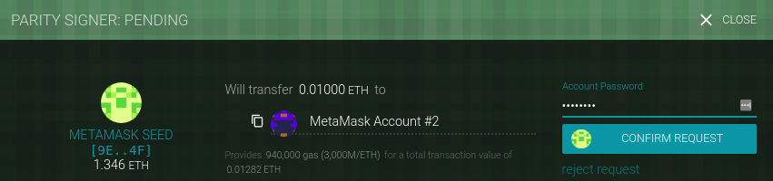

src = web3.eth.accounts[0];
dst = web3.eth.accounts[1];Transactions
Transactions are signed messages originated by an externally owned account, transmitted by the Ethereum network, and recorded on the Ethereum blockchain. This basic definition conceals a lot of surprising and fascinating details. Another way to look at transactions is that they are the only things that can trigger a change of state, or cause a contract to execute in the EVM. Ethereum is a global singleton state machine, and transactions are what make that state machine "tick," changing its state. Contracts don’t run on their own. Ethereum doesn’t run autonomously. Everything starts with a transaction.
In this chapter, we will dissect transactions, show how they work, and examine the details. Note that much of this chapter is addressed to those who are interested in managing their own transactions at a low level, perhaps because they are writing a wallet app; you don’t have to worry about this if you are happy using existing wallet applications, although you may find the details interesting!
The Structure of a Transaction
First let’s take a look at the basic structure of a transaction, as it is serialized and transmitted on the Ethereum network. Each client and application that receives a serialized transaction will store it in-memory using its own internal data structure, perhaps embellished with metadata that doesn’t exist in the network serialized transaction itself. The network-serialization is the only standard form of a transaction.
A transaction is a serialized binary message that contains the following data:
- Nonce
-
A sequence number, issued by the originating EOA, used to prevent message replay
- Gas price
-
The price of gas (in wei) the originator is willing to pay
- Gas limit
-
The maximum amount of gas the originator is willing to buy for this transaction
- Recipient
-
The destination Ethereum address
- Value
-
The amount of ether to send to the destination
- Data
-
The variable-length binary data payload
- v,r,s
-
The three components of an ECDSA digital signature of the originating EOA
The transaction message’s structure is serialized using the Recursive Length Prefix (RLP) encoding scheme, which was created specifically for simple, byte-perfect data serialization in Ethereum. All numbers in Ethereum are encoded as big-endian integers, of lengths that are multiples of 8 bits.
Note that the field labels (to, gas limit, etc.) are shown here for clarity, but are not part of the transaction serialized data, which contains the field values RLP-encoded. In general, RLP does not contain any field delimiters or labels. RLP’s length prefix is used to identify the length of each field. Anything beyond the defined length belongs to the next field in the structure.
While this is the actual transaction structure transmitted, most internal representations and user interface visualizations embellish this with additional information, derived from the transaction or from the blockchain.
For example, you may notice there is no “from” data in the address identifying the originator EOA. That is because the EOA’s public key can be derived from the v,r,s components of the ECDSA signature. The address can, in turn, be derived from the public key. When you see a transaction showing a "from" field, that was added by the software used to visualize the transaction. Other metadata frequently added to the transaction by client software includes the block number (once it is mined and included in the blockchain) and a transaction ID (calculated hash). Again, this data is derived from the transaction, and does not form part of the transaction message itself.
The Transaction Nonce
The nonce is one of the most important and least understood components of a transaction. The definition in the Yellow Paper (see [references]) reads:
nonce: A scalar value equal to the number of transactions sent from this address or, in the case of accounts with associated code, the number of contract-creations made by this account.
Strictly speaking, the nonce is an attribute of the originating address; that is, it only has meaning in the context of the sending address. However, the nonce is not stored explicitly as part of an account’s state on the blockchain. Instead, it is calculated dynamically, by counting the number of confirmed transactions that have originated from an address.
There are two scenarios where the existence of a transaction-counting nonce is important: the usability feature of transactions being included in the order of creation, and the vital feature of transaction duplication protection. Let’s look at an example scenario for each of these:
-
Imagine you wish to make two transactions. You have an important payment to make of 6 ether, and also another payment of 8 ether. You sign and broadcast the 6-ether transaction first, because it is the more important one, and then you sign and broadcast the second, 8-ether transaction. Sadly, you have overlooked the fact that your account contains only 10 ether, so the network can’t accept both transactions: one of them will fail. Because you sent the more important 6-ether one first, you understandably expect that one to go through and the 8-ether one to be rejected. However, in a decentralized system like Ethereum, nodes may receive the transactions in either order; there is no guarantee that a particular node will have one transaction propagated to it before the other. As such, it will almost certainly be the case that some nodes receive the 6-ether transaction first and others receive the 8-ether transaction first. Without the nonce, it would be random as to which one gets accepted and which rejected. However, with the nonce included, the first transaction you sent will have a nonce of, let’s say, 3, while the 8-ether transaction has the next nonce value (i.e., 4). So, that transaction will be ignored until the transactions with nonces from 0 to 3 have been processed, even if it is received first. Phew!
-
Now imagine you have an account with 100 ether. Fantastic! You find someone online who will accept payment in ether for a mcguffin-widget that you really want to buy. You send them 2 ether and they send you the mcguffin-widget. Lovely. To make that 2-ether payment, you signed a transaction sending 2 ether from your account to their account, and then broadcast it to the Ethereum network to be verified and included on the blockchain. Now, without a nonce value in the transaction, a second transaction sending 2 ether to the same address a second time will look exactly the same as the first transaction. This means that anyone who sees your transaction on the Ethereum network (which means everyone, including the recipient or your enemies) can "replay" the transaction again and again and again until all your ether is gone simply by copying and pasting your original transaction and resending it to the network. However, with the nonce value included in the transaction data, every single transaction is unique, even when sending the same amount of ether to the same recipient address multiple times. Thus, by having the incrementing nonce as part of the transaction, it is simply not possible for anyone to "duplicate" a payment you have made.
In summary, it is important to note that the use of the nonce is actually vital for an account-based protocol, in contrast to the “Unspent Transaction Output” (UTXO) mechanism of the Bitcoin protocol.
Keeping Track of Nonces
In practical terms, the nonce is an up-to-date count of the number of confirmed (i.e., on-chain) transactions that have originated from an account. To find out what the nonce is, you can interrogate the blockchain, for example via the web3 interface. Open a JavaScript console in a browser with MetaMask running, or use the truffle console command to access the JavaScript web3 library, then type:
> web3.eth.getTransactionCount("0x9e713963a92c02317a681b9bb3065a8249de124f")
40
|
Tip
|
The nonce is a zero-based counter, meaning the first transaction has nonce 0. In this example, we have a transaction count of 40, meaning nonces 0 through 39 have been seen. The next transaction’s nonce will need to be 40. |
Your wallet will keep track of nonces for each address it manages. It’s fairly simple to do that, as long as you are only originating transactions from a single point. Let’s say you are writing your own wallet software or some other application that originates transactions. How do you track nonces?
When you create a new transaction, you assign the next nonce in the sequence. But until it is confirmed, it will not count toward the getTransactionCount total.
|
Warning
|
Be careful when using the getTransactionCount function for counting pending transactions, because you might run into some problems if you send a few transactions in a row. |
Let’s look at an example:
> web3.eth.getTransactionCount("0x9e713963a92c02317a681b9bb3065a8249de124f", \
"pending")
40
> web3.eth.sendTransaction({from: web3.eth.accounts[0], to: \
"0xB0920c523d582040f2BCB1bD7FB1c7C1ECEbdB34", value: web3.toWei(0.01, "ether")});
> web3.eth.getTransactionCount("0x9e713963a92c02317a681b9bb3065a8249de124f", \
"pending")
41
> web3.eth.sendTransaction({from: web3.eth.accounts[0], to: \
"0xB0920c523d582040f2BCB1bD7FB1c7C1ECEbdB34", value: web3.toWei(0.01, "ether")});
> web3.eth.getTransactionCount("0x9e713963a92c02317a681b9bb3065a8249de124f", \
"pending")
41
> web3.eth.sendTransaction({from: web3.eth.accounts[0], to: \
"0xB0920c523d582040f2BCB1bD7FB1c7C1ECEbdB34", value: web3.toWei(0.01, "ether")});
> web3.eth.getTransactionCount("0x9e713963a92c02317a681b9bb3065a8249de124f", \
"pending")
41
As you can see, the first transaction we sent increased the transaction count to 41, showing the pending transaction. But when we sent three more transactions in quick succession, the getTransactionCount call didn’t count them. It only counted one, even though you might expect there to be three pending in the mempool. If we wait a few seconds to allow for network communications to settle down, the getTransactionCount call will return the expected number. But in the interim, while there is more than one transaction pending, it might not help us.
When you build an application that constructs transactions, it cannot rely on getTransactionCount for pending transactions. Only when the pending and confirmed counts are equal (all outstanding transactions are confirmed) can you trust the output of getTransactionCount to start your nonce counter. Thereafter, keep track of the nonce in your application until each transaction confirms.
Parity’s JSON RPC interface offers the parity_nextNonce function, which returns the next nonce that should be used in a transaction. The parity_nextNonce function counts nonces correctly, even if you construct several transactions in rapid succession without confirming them:
$ curl --data '{"method":"parity_nextNonce", \
"params":["0x9e713963a92c02317a681b9bb3065a8249de124f"],\
"id":1,"jsonrpc":"2.0"}' -H "Content-Type: application/json" -X POST \
localhost:8545
{"jsonrpc":"2.0","result":"0x32","id":1}
|
Tip
|
Parity has a web console for accessing the JSON RPC interface, but here we are using a command-line HTTP client to access it. |
Gaps in Nonces, Duplicate Nonces, and Confirmation
It is important to keep track of nonces if you are creating transactions programmatically, especially if you are doing so from multiple independent processes simultaneously.
The Ethereum network processes transactions sequentially, based on the nonce. That means that if you transmit a transaction with nonce 0 and then transmit a transaction with nonce 2, the second transaction will not be included in any blocks. It will be stored in the mempool, while the Ethereum network waits for the missing nonce to appear. All nodes will assume that the missing nonce has simply been delayed and that the transaction with nonce 2 was received out of sequence.
If you then transmit a transaction with the missing nonce 1, both transactions (nonces 1 and 2) will be processed and included (if valid, of course). Once you fill the gap, the network can mine the out-of-sequence transaction that it held in the mempool.
What this means is that if you create several transactions in sequence and one of them does not get officially included in any blocks, all the subsequent transactions will be "stuck," waiting for the missing nonce. A transaction can create an inadvertent "gap" in the nonce sequence because it is invalid or has insufficient gas. To get things moving again, you have to transmit a valid transaction with the missing nonce. You should be equally mindful that once a transaction with the "missing" nonce is validated by the network, all the broadcast transactions with subsequent nonces will incrementally become valid; it is not possible to "recall" a transaction!
If, on the other hand, you accidentally duplicate a nonce, for example by transmitting two transactions with the same nonce but different recipients or values, then one of them will be confirmed and one will be rejected. Which one is confirmed will be determined by the sequence in which they arrive at the first validating node that receives them—i.e., it will be fairly random.
As you can see, keeping track of nonces is necessary, and if your application doesn’t manage that process correctly you will run into problems. Unfortunately, things get even more difficult if you are trying to do this concurrently, as we will see in the next section.
Concurrency, Transaction Origination, and Nonces
Concurrency is a complex aspect of computer science, and it crops up unexpectedly sometimes, especially in decentralized and distributed real-time systems like Ethereum.
In simple terms, concurrency is when you have simultaneous computation by multiple independent systems. These can be in the same program (e.g., multithreading), on the same CPU (e.g., multiprocessing), or on different computers (i.e., distributed systems). Ethereum, by definition, is a system that allows concurrency of operations (nodes, clients, DApps) but enforces a singleton state through consensus.
Now, imagine that you have multiple independent wallet applications that are generating transactions from the same address or addresses. One example of such a situation would be an exchange processing withdrawals from the exchange’s hot wallet (a wallet whose keys are stored online, in contrast to a cold wallet where the keys are never online). Ideally, you’d want to have more than one computer processing withdrawals, so that it doesn’t become a bottleneck or single point of failure. However, this quickly becomes problematic, as having more than one computer producing withdrawals will result in some thorny concurrency problems, not least of which is the selection of nonces. How do multiple computers generating, signing, and broadcasting transactions from the same hot wallet account coordinate?
You could use a single computer to assign nonces, on a first-come first-served basis, to computers signing transactions. However, this computer is now a single point of failure. Worse, if several nonces are assigned and one of them never gets used (because of a failure in the computer processing the transaction with that nonce), all subsequent transactions get stuck.
Another approach would be to generate the transactions, but not assign a nonce to them (and therefore leave them unsigned—remember that the nonce is an integral part of the transaction data and therefore needs to be included in the digital signature that authenticates the transaction). You could then queue them to a single node that signs them and also keeps track of nonces. Again, though, this would be a choke point in the process: the signing and tracking of nonces is the part of your operation that is likely to become congested under load, whereas the generation of the unsigned transaction is the part you don’t really need to parallelize. You would have some concurrency, but it would be lacking in a critical part of the process.
In the end, these concurrency problems, on top of the difficulty of tracking account balances and transaction confirmations in independent processes, force most implementations toward avoiding concurrency and creating bottlenecks such as a single process handling all withdrawal transactions in an exchange, or setting up multiple hot wallets that can work completely independently for withdrawals and only need to be intermittently rebalanced.
Transaction Gas
We talked about gas a little in earlier chapters, and we discuss it in more detail in [gas]. However, let’s cover some basics about the role of the gasPrice and gasLimit components of a transaction.
Gas is the fuel of Ethereum. Gas is not ether—it’s a separate virtual currency with its own exchange rate against ether. Ethereum uses gas to control the amount of resources that a transaction can use, since it will be processed on thousands of computers around the world. The open-ended (Turing-complete) computation model requires some form of metering in order to avoid denial-of-service attacks or inadvertently resource-devouring transactions.
Gas is separate from ether in order to protect the system from the volatility that might arise along with rapid changes in the value of ether, and also as a way to manage the important and sensitive ratios between the costs of the various resources that gas pays for (namely, computation, memory, and storage).
The gasPrice field in a transaction allows the transaction originator to set the price they are willing to pay in exchange for gas. The price is measured in wei per gas unit. For example, in the sample transaction in [intro_chapter] your wallet set the gasPrice to 3 gwei (3 gigawei or 3 billion wei).
|
Tip
|
The popular site ETH Gas Station provides information on the current prices of gas and other relevant gas metrics for the Ethereum main network. |
Wallets can adjust the gasPrice in transactions they originate to achieve faster confirmation of transactions. The higher the gasPrice, the faster the transaction is likely to be confirmed. Conversely, lower-priority transactions can carry a reduced price, resulting in slower confirmation. The minimum value that gasPrice can be set to is zero, which means a fee-free transaction. During periods of low demand for space in a block, such transactions might very well get mined.
|
Note
|
The minimum acceptable gasPrice is zero. That means that wallets can generate completely free transactions. Depending on capacity, these may never be confirmed, but there is nothing in the protocol that prohibits free transactions. You can find several examples of such transactions successfully included on the Ethereum blockchain. |
The web3 interface offers a gasPrice suggestion, by calculating a median price across several blocks (we can use the truffle console or any JavaScript web3 console to do that):
> web3.eth.getGasPrice(console.log)
> null BigNumber { s: 1, e: 10, c: [ 10000000000 ] }
The second important field related to gas is gasLimit. In simple terms, gasLimit gives the maximum number of units of gas the transaction originator is willing to buy in order to complete the transaction. For simple payments, meaning transactions that transfer ether from one EOA to another EOA, the gas amount needed is fixed at 21,000 gas units. To calculate how much ether that will cost, you multiply 21,000 by the gasPrice you’re willing to pay. For example:
> web3.eth.getGasPrice(function(err, res) {console.log(res*21000)} )
> 210000000000000
If your transaction’s destination address is a contract, then the amount of gas needed can be estimated but cannot be determined with accuracy. That’s because a contract can evaluate different conditions that lead to different execution paths, with different total gas costs. The contract may execute only a simple computation or a more complex one, depending on conditions that are outside of your control and cannot be predicted. To demonstrate this, let’s look at an example: we can write a smart contract that increments a counter each time it is called and executes a particular loop a number of times equal to the call count. Maybe on the 100th call it gives out a special prize, like a lottery, but needs to do additional computation to calculate the prize. If you call the contract 99 times one thing happens, but on the 100th call something very different happens. The amount of gas you would pay for that depends on how many other transactions have called that function before your transaction is included in a block. Perhaps your estimate is based on being the 99th transaction, but just before your transaction is confirmed someone else calls the contract for the 99th time. Now you’re the 100th transaction to call, and the computation effort (and gas cost) is much higher.
To borrow a common analogy used in Ethereum, you can think of gasLimit as the capacity of the fuel tank in your car (your car is the transaction). You fill the tank with as much gas as you think it will need for the journey (the computation needed to validate your transaction). You can estimate the amount to some degree, but there might be unexpected changes to your journey, such as a diversion (a more complex execution path), that increase fuel consumption.
The analogy to a fuel tank is somewhat misleading, however. It’s actually more like a credit account for a gas station company, where you pay after the trip is completed, based on how much gas you actually used. When you transmit your transaction, one of the first validation steps is to check that the account it originated from has enough ether to pay the gasPrice * gas fee. But the amount is not actually deducted from your account until the transaction finishes executing. You are only billed for gas actually consumed by your transaction, but you have to have enough balance for the maximum amount you are willing to pay before you send your transaction.
Transaction Recipient
The recipient of a transaction is specified in the to field. This contains a 20-byte Ethereum address. The address can be an EOA or a contract address.
Ethereum does no further validation of this field. Any 20-byte value is considered valid. If the 20-byte value corresponds to an address without a corresponding private key, or without a corresponding contract, the transaction is still valid. Ethereum has no way of knowing whether an address was correctly derived from a public key (and therefore from a private key) in existence.
|
Warning
|
The Ethereum protocol does not validate recipient addresses in transactions. You can send to an address that has no corresponding private key or contract, thereby "burning" the ether, rendering it forever unspendable. Validation should be done at the user interface level. |
Sending a transaction to the wrong address will probably burn the ether sent, rendering it forever inaccessible (unspendable), since most addresses do not have a known private key and therefore no signature can be generated to spend it. It is assumed that validation of the address happens at the user interface level (see [EIP55]). In fact, there are a number of valid reasons for burning ether—for example, as a disincentive to cheating in payment channels and other smart contracts—and since the amount of ether is finite, burning ether effectively distributes the value burned to all ether holders (in proportion to the amount of ether they hold).
Transaction Value and Data
The main "payload" of a transaction is contained in two fields: value and data. Transactions can have both value and data, only value, only data, or neither value nor data. All four combinations are valid.
A transaction with only value is a payment. A transaction with only data is an invocation. A transaction with both value and data is both a payment and an invocation. A transaction with neither value nor data—well that’s probably just a waste of gas! But it is still possible.
Let’s try all of these combinations. First we’ll set the source and destination addresses from our wallet, just to make the demo easier to read:
Our first transaction contains only a value (payment), and no data payload:
web3.eth.sendTransaction({from: src, to: dst, \
value: web3.toWei(0.01, "ether"), data: ""});Our wallet shows a confirmation screen indicating the value to send, as shown in Parity wallet showing a transaction with value, but no data.

Figure 1. Parity wallet showing a transaction with value, but no data
The next example specifies both a value and a data payload:
web3.eth.sendTransaction({from: src, to: dst, \
value: web3.toWei(0.01, "ether"), data: "0x1234"});Our wallet shows a confirmation screen indicating the value to send as well as the data payload, as shown in Parity wallet showing a transaction with value and data.

Figure 2. Parity wallet showing a transaction with value and data
The next transaction includes a data payload but specifies a value of zero:
web3.eth.sendTransaction({from: src, to: dst, value: 0, data: "0x1234"});Our wallet shows a confirmation screen indicating the zero value and the data payload, as shown in Parity wallet showing a transaction with no value, only data.

Figure 3. Parity wallet showing a transaction with no value, only data
Finally, the last transaction includes neither a value to send nor a data payload:
web3.eth.sendTransaction({from: src, to: dst, value: 0, data: ""}));Our wallet shows a confirmation screen indicating zero value, as shown in Parity wallet showing a transaction with no value, and no data.

Figure 4. Parity wallet showing a transaction with no value, and no data
Transmitting Value to EOAs and Contracts
When you construct an Ethereum transaction that contains a value, it is the equivalent of a payment. Such transactions behave differently depending on whether the destination address is a contract or not.
For EOA addresses, or rather for any address that isn’t flagged as a contract on the blockchain, Ethereum will record a state change, adding the value you sent to the balance of the address. If the address has not been seen before, it will be added to the client’s internal representation of the state and its balance initialized to the value of your payment.
If the destination address (to) is a contract, then the EVM will execute the contract and will attempt to call the function named in the data payload of your transaction. If there is no data in your transaction, the EVM will call a fallback function and, if that function is payable, will execute it to determine what to do next. If there is no fallback function, then the effect of the transaction will be to increase the balance of the contract, exactly like a payment to a wallet.
A contract can reject incoming payments by throwing an exception immediately when a function is called, or as determined by conditions coded in a function. If the function terminates successfully (without an exception), then the contract’s state is updated to reflect an increase in the contract’s ether balance.
Transmitting a Data Payload to an EOA or Contract
When your transaction contains data, it is most likely addressed to a contract address. That doesn’t mean you cannot send a data payload to an EOA—that is completely valid in the Ethereum protocol. However, in that case, the interpretation of the data is up to the wallet you use to access the EOA. It is ignored by the Ethereum protocol. Most wallets also ignore any data received in a transaction to an EOA they control. In the future, it is possible that standards may emerge that allow wallets to interpret data the way contracts do, thereby allowing transactions to invoke functions running inside user wallets. The critical difference is that any interpretation of the data payload by an EOA is not subject to Ethereum’s consensus rules, unlike a contract execution.
For now, let’s assume your transaction is delivering data to a contract address. In that case, the data will be interpreted by the EVM as a contract invocation. Most contracts use this data more specifically as a function invocation, calling the named function and passing any encoded arguments to the function.
The data payload sent to an ABI-compatible contract (which you can assume all contracts are) is a hex-serialized encoding of:
- A function selector
-
The first 4 bytes of the Keccak-256 hash of the function’s prototype. This allows the contract to unambiguously identify which function you wish to invoke.
- The function arguments
-
The function’s arguments, encoded according to the rules for the various elementary types defined in the ABI specification.
In [solidity_faucet_example], we defined a function for withdrawals:
function withdraw(uint withdraw_amount) public {The prototype of a function is defined as the string containing the name of the function, followed by the data types of each of its arguments, enclosed in parentheses and separated by commas. The function name here is withdraw and it takes a single argument that is a uint (which is an alias for uint256), so the prototype of withdraw would be:
withdraw(uint256)Let’s calculate the Keccak-256 hash of this string:
> web3.sha3("withdraw(uint256)");
'0x2e1a7d4d13322e7b96f9a57413e1525c250fb7a9021cf91d1540d5b69f16a49f'
The first 4 bytes of the hash are 0x2e1a7d4d. That’s our "function selector" value, which will tell the contract which function we want to call.
Next, let’s calculate a value to pass as the argument withdraw_amount. We want to withdraw 0.01 ether. Let’s encode that to a hex-serialized big-endian unsigned 256-bit integer, denominated in wei:
> withdraw_amount = web3.toWei(0.01, "ether"); '10000000000000000' > withdraw_amount_hex = web3.toHex(withdraw_amount); '0x2386f26fc10000'
Now, we add the function selector to the amount (padded to 32 bytes):
2e1a7d4d000000000000000000000000000000000000000000000000002386f26fc10000
That’s the data payload for our transaction, invoking the withdraw function and requesting 0.01 ether as the withdraw_amount.
Special Transaction: Contract Creation
One special case that we should mention is a transaction that creates a new contract on the blockchain, deploying it for future use. Contract creation transactions are sent to a special destination address called the zero address; the to field in a contract registration transaction contains the address 0x0. This address represents neither an EOA (there is no corresponding private–public key pair) nor a contract. It can never spend ether or initiate a transaction. It is only used as a destination, with the special meaning "create this contract."
While the zero address is intended only for contract creation, it sometimes receives payments from various addresses. There are two explanations for this: either it is by accident, resulting in the loss of ether, or it is an intentional ether burn (deliberately destroying ether by sending it to an address from which it can never be spent). However, if you want to do an intentional ether burn, you should make your intention clear to the network and use the specially designated burn address instead:
0x000000000000000000000000000000000000dEaD
|
Warning
|
Any ether sent to the designated burn address will become unspendable and be lost forever. |
A contract creation transaction need only contain a data payload that contains the compiled bytecode which will create the contract. The only effect of this transaction is to create the contract. You can include an ether amount in the value field if you want to set the new contract up with a starting balance, but that is entirely optional. If you send a value (ether) to the contract creation address without a data payload (no contract), then the effect is the same as sending to a burn address—there is no contract to credit, so the ether is lost.
As an example, we can create the Faucet.sol contract used in [intro_chapter] by manually creating a transaction to the zero address with the contract in the data payload. The contract needs to be compiled into a bytecode representation. This can be done with the Solidity compiler:
$ solc --bin Faucet.sol Binary: 6060604052341561000f57600080fd5b60e58061001d6000396000f30060606040526004361060...
The same information can also be obtained from the Remix online compiler.
Now we can create the transaction:
> src = web3.eth.accounts[0];
> faucet_code = \
"0x6060604052341561000f57600080fd5b60e58061001d6000396000f300606...f0029";
> web3.eth.sendTransaction({from: src, to: 0, data: faucet_code, \
gas: 113558, gasPrice: 200000000000});
"0x7bcc327ae5d369f75b98c0d59037eec41d44dfae75447fd753d9f2db9439124b"
It is good practice to always specify a to parameter, even in the case of zero-address contract creation, because the cost of accidentally sending your ether to 0x0 and losing it forever is too great. You should also specify a gasPrice and gasLimit.
Once the contract is mined we can see it on the Etherscan block explorer, as shown in Etherscan showing the contract successfully mined.

Figure 5. Etherscan showing the contract successfully mined
We can look at the receipt of the transaction to get information about the contract:
> eth.getTransactionReceipt( \
"0x7bcc327ae5d369f75b98c0d59037eec41d44dfae75447fd753d9f2db9439124b");
{
blockHash: "0x6fa7d8bf982490de6246875deb2c21e5f3665b4422089c060138fc3907a95bb2",
blockNumber: 3105256,
contractAddress: "0xb226270965b43373e98ffc6e2c7693c17e2cf40b",
cumulativeGasUsed: 113558,
from: "0x2a966a87db5913c1b22a59b0d8a11cc51c167a89",
gasUsed: 113558,
logs: [],
logsBloom: \
"0x00000000000000000000000000000000000000000000000000...00000",
status: "0x1",
to: null,
transactionHash: \
"0x7bcc327ae5d369f75b98c0d59037eec41d44dfae75447fd753d9f2db9439124b",
transactionIndex: 0
}
This includes the address of the contract, which we can use to send funds to and receive funds from the contract as shown in the previous section:
> contract_address = "0xb226270965b43373e98ffc6e2c7693c17e2cf40b"
> web3.eth.sendTransaction({from: src, to: contract_address, \
value: web3.toWei(0.1, "ether"), data: ""});
"0x6ebf2e1fe95cc9c1fe2e1a0dc45678ccd127d374fdf145c5c8e6cd4ea2e6ca9f"
> web3.eth.sendTransaction({from: src, to: contract_address, value: 0, data: \
"0x2e1a7d4d000000000000000000000000000000000000000000000000002386f26fc10000"});
"0x59836029e7ce43e92daf84313816ca31420a76a9a571b69e31ec4bf4b37cd16e"
After a while, both transactions are visible on Etherscan, as shown in Etherscan showing the transactions for sending and receiving funds.

Figure 6. Etherscan showing the transactions for sending and receiving funds
Digital Signatures
So far, we have not delved into any detail about digital signatures. In this section, we look at how digital signatures work and how they can be used to present proof of ownership of a private key without revealing that private key.
The Elliptic Curve Digital Signature Algorithm
The digital signature algorithm used in Ethereum is the Elliptic Curve Digital Signature Algorithm (ECDSA). It’s based on elliptic curve private–public key pairs, as described in [elliptic_curve].
A digital signature serves three purposes in Ethereum (see the following sidebar). First, the signature proves that the owner of the private key, who is by implication the owner of an Ethereum account, has authorized the spending of ether, or execution of a contract. Secondly, it guarantees non-repudiation: the proof of authorization is undeniable. Thirdly, the signature proves that the transaction data has not been and cannot be modified by anyone after the transaction has been signed.
How Digital Signatures Work
A digital signature is a mathematical scheme that consists of two parts. The first part is an algorithm for creating a signature, using a private key (the signing key), from a message (which in our case is the transaction). The second part is an algorithm that allows anyone to verify the signature by only using the message and a public key.
Creating a digital signature
In Ethereum’s implementation of ECDSA, the "message" being signed is the transaction, or more accurately, the Keccak-256 hash of the RLP-encoded data from the transaction. The signing key is the EOA’s private key. The result is the signature:
where:
-
k is the signing private key.
-
m is the RLP-encoded transaction.
-
Fkeccak256 is the Keccak-256 hash function.
-
Fsig is the signing algorithm.
-
Sig is the resulting signature.
The function Fsig produces a signature Sig that is composed of two values, commonly referred to as r and s:
Verifying the Signature
To verify the signature, one must have the signature (r and s), the serialized transaction, and the public key that corresponds to the private key used to create the signature. Essentially, verification of a signature means "only the owner of the private key that generated this public key could have produced this signature on this transaction."
The signature verification algorithm takes the message (i.e., a hash of the transaction for our usage), the signer’s public key, and the signature (r and s values), and returns true if the signature is valid for this message and public key.
ECDSA Math
As mentioned previously, signatures are created by a mathematical function Fsig that produces a signature composed of two values, r and s. In this section we look at the function Fsig in more detail.
The signature algorithm first generates an ephemeral (temporary) private key in a cryptographically secure way. This temporary key is used in the calculation of the r and s values to ensure that the sender’s actual private key can’t be calculated by attackers watching signed transactions on the Ethereum network.
As we know from [pubkey], the ephemeral private key is used to derive the corresponding (ephemeral) public key, so we have:
-
A cryptographically secure random number q, which is used as the ephemeral private key
-
The corresponding ephemeral public key Q, generated from q and the elliptic curve generator point G
The r value of the digital signature is then the x coordinate of the ephemeral public key Q.
From there, the algorithm calculates the s value of the signature, such that:
- s ≡ q-1 (Keccak256(m) + r * k) (mod p)
where:
-
q is the ephemeral private key.
-
r is the x coordinate of the ephemeral public key.
-
k is the signing (EOA owner’s) private key.
-
m is the transaction data.
-
p is the prime order of the elliptic curve.
Verification is the inverse of the signature generation function, using the r and s values and the sender’s public key to calculate a value Q, which is a point on the elliptic curve (the ephemeral public key used in signature creation). The steps are as follows:
-
Check all inputs are correctly formed
-
Calculate w = s-1 mod p
-
Calculate u1 = Keccak256(m) * w mod p
-
Calculate u2 = r * w mod p
-
Finally, calculate the point on the elliptic curve Q ≡ u1 * _G + u2 * K (mod p)
where:
-
r and s are the signature values.
-
K is the signer’s (EOA owner’s) public key.
-
m is the transaction data that was signed.
-
G is the elliptic curve generator point.
-
p is the prime order of the elliptic curve.
If the x coordinate of the calculated point Q is equal to r, then the verifier can conclude that the signature is valid.
Note that in verifying the signature, the private key is neither known nor revealed.
|
Tip
|
ECDSA is necessarily a fairly complicated piece of math; a full explanation is beyond the scope of this book. A number of great guides online take you through it step by step: search for "ECDSA explained" or try this one: http://bit.ly/2r0HhGB. |
Transaction Signing in Practice
To produce a valid transaction, the originator must digitally sign the message, using the Elliptic Curve Digital Signature Algorithm. When we say "sign the transaction" we actually mean "sign the Keccak-256 hash of the RLP-serialized transaction data." The signature is applied to the hash of the transaction data, not the transaction itself.
To sign a transaction in Ethereum, the originator must:
-
Create a transaction data structure, containing nine fields: nonce, gasPrice, gasLimit, to, value, data, chainID, 0, 0.
-
Produce an RLP-encoded serialized message of the transaction data structure.
-
Compute the Keccak-256 hash of this serialized message.
-
Compute the ECDSA signature, signing the hash with the originating EOA’s private key.
-
Append the ECDSA signature’s computed v, r, and s values to the transaction.
The special signature variable v indicates two things: the chain ID and the recovery identifier to help the ECDSArecover function check the signature. It is calculated as either one of 27 or 28, or as the chain ID doubled plus 35 or 36. For more information on the chain ID, see Raw Transaction Creation with EIP-155. The recovery identifier (27 or 28 in the "old-style" signatures, or 35 or 36 in the full Spurious Dragon–style transactions) is used to indicate the parity of the y component of the public key (see The Signature Prefix Value (v) and Public Key Recovery for more details).
|
Note
|
At block #2,675,000 Ethereum implemented the "Spurious Dragon" hard fork, which, among other changes, introduced a new signing scheme that includes transaction replay protection (preventing transactions meant for one network being replayed on others). This new signing scheme is specified in EIP-155. This change affects the form of the transaction and its signature, so attention must be paid to the first of the three signature variables (i.e., v), which takes one of two forms and indicates the data fields included in the transaction message being hashed. |
Raw Transaction Creation and Signing
In this section we’ll create a raw transaction and sign it, using the ethereumjs-tx library. This demonstrates the functions that would normally be used inside a wallet, or an application that signs transactions on behalf of a user. The source code for this example is in the file raw_tx_demo.js in the book’s GitHub repository:
link:code/web3js/raw_tx/raw_tx_demo.js[]Running the example code produces the following results:
$ node raw_tx_demo.js RLP-Encoded Tx: 0xe6808609184e72a0008303000094b0920c523d582040f2bcb1bd7fb1c7c1... Tx Hash: 0xaa7f03f9f4e52fcf69f836a6d2bbc7706580adce0a068ff6525ba337218e6992 Signed Raw Transaction: 0xf866808609184e72a0008303000094b0920c523d582040f2bcb1...
Raw Transaction Creation with EIP-155
The EIP-155 "Simple Replay Attack Protection" standard specifies a replay-attack-protected transaction encoding, which includes a chain identifier inside the transaction data, prior to signing. This ensures that transactions created for one blockchain (e.g., the Ethereum main network) are invalid on another blockchain (e.g., Ethereum Classic or the Ropsten test network). Therefore, transactions broadcast on one network cannot be replayed on another, hence the name of the standard.
EIP-155 adds three fields to the main six fields of the transaction data structure, namely the chain identifier, 0, and 0. These three fields are added to the transaction data before it is encoded and hashed. They therefore change the transaction’s hash, to which the signature is later applied. By including the chain identifier in the data being signed, the transaction signature prevents any changes, as the signature is invalidated if the chain identifier is modified. Therefore, EIP-155 makes it impossible for a transaction to be replayed on another chain, because the signature’s validity depends on the chain identifier.
The chain identifier field takes a value according to the network the transaction is meant for, as outlined in Chain identifiers.
| Chain | Chain ID |
|---|---|
Ethereum mainnet |
1 |
Morden (obsolete), Expanse |
2 |
Ropsten |
3 |
Rinkeby |
4 |
Rootstock mainnet |
30 |
Rootstock testnet |
31 |
Kovan |
42 |
Ethereum Classic mainnet |
61 |
Ethereum Classic testnet |
62 |
Geth private testnets |
1337 |
The resulting transaction structure is RLP-encoded, hashed, and signed. The signature algorithm is modified slightly to encode the chain identifier in the v prefix too.
For more details, see the EIP-155 specification.
The Signature Prefix Value (v) and Public Key Recovery
As mentioned in The Structure of a Transaction, the transaction message doesn’t include a "from" field. That’s because the originator’s public key can be computed directly from the ECDSA signature. Once you have the public key, you can compute the address easily. The process of recovering the signer’s public key is called public key recovery.
Given the values r and s that were computed in ECDSA Math, we can compute two possible public keys.
First, we compute two elliptic curve points, R and R', from the x coordinate r value that is in the signature. There are two points because the elliptic curve is symmetric across the x-axis, so that for any value x there are two possible values that fit the curve, one on each side of the x-axis.
From r we also calculate r-1, which is the multiplicative inverse of r.
Finally, we calculate z, which is the n lowest bits of the message hash, where n is the order of the elliptic curve.
The two possible public keys are then:
- K1 = r–1 (sR – zG)
and:
- K2 = r–1 (sR' – zG)
where:
-
K1 and K2 are the two possibilities for the signer’s public key.
-
r-1 is the multiplicative inverse of the signature’s r value.
-
s is the signature’s s value.
-
R and R' are the two possibilities for the ephemeral public key Q.
-
z is the n-lowest bits of the message hash.
-
G is the elliptic curve generator point.
To make things more efficient, the transaction signature includes a prefix value v, which tells us which of the two possible R values is the ephemeral public key. If v is even, then R is the correct value. If v is odd, then it is R'. That way, we need to calculate only one value for R and only one value for K.
Separating Signing and Transmission (Offline Signing)
Once a transaction is signed, it is ready to transmit to the Ethereum network. The three steps of creating, signing, and broadcasting a transaction normally happen as a single operation, for example using web3.eth.sendTransaction. However, as you saw in Raw Transaction Creation and Signing, you can create and sign the transaction in two separate steps. Once you have a signed transaction, you can then transmit it using web3.eth.sendSignedTransaction, which takes a hex-encoded and signed transaction and transmits it on the Ethereum network.
Why would you want to separate the signing and transmission of transactions? The most common reason is security. The computer that signs a transaction must have unlocked private keys loaded in memory. The computer that does the transmitting must be connected to the internet (and be running an Ethereum client). If these two functions are on one computer, then you have private keys on an online system, which is quite dangerous. Separating the functions of signing and transmitting and performing them on different machines (on an offline and an online device, respectively) is called offline signing and is a common security practice.
Offline signing of Ethereum transactions shows the process:
-
Create an unsigned transaction on the online computer where the current state of the account, notably the current nonce and funds available, can be retrieved.
-
Transfer the unsigned transaction to an "air-gapped" offline device for transaction signing, e.g., via a QR code or USB flash drive.
-
Transmit the signed transaction (back) to an online device for broadcast on the Ethereum blockchain, e.g., via QR code or USB flash drive.

Figure 7. Offline signing of Ethereum transactions
Depending on the level of security you need, your "offline signing" computer can have varying degrees of separation from the online computer, ranging from an isolated and firewalled subnet (online but segregated) to a completely offline system known as an air-gapped system. In an air-gapped system there is no network connectivity at all—the computer is separated from the online environment by a gap of "air." To sign transactions you transfer them to and from the air-gapped computer using data storage media or (better) a webcam and QR code. Of course, this means you must manually transfer every transaction you want signed, and this doesn’t scale.
While not many environments can utilize a fully air-gapped system, even a small degree of isolation has significant security benefits. For example, an isolated subnet with a firewall that only allows a message-queue protocol through can offer a much-reduced attack surface and much higher security than signing on the online system. Many companies use a protocol such as ZeroMQ (0MQ) for this purpose. With a setup like that, transactions are serialized and queued for signing. The queuing protocol transmits the serialized message, in a way similar to a TCP socket, to the signing computer. The signing computer reads the serialized transactions from the queue (carefully), applies a signature with the appropriate key, and places them on an outgoing queue. The outgoing queue transmits the signed transactions to a computer with an Ethereum client that dequeues them and transmits them.
Transaction Propagation
The Ethereum network uses a "flood routing" protocol. Each Ethereum client acts as a node in a peer-to-peer (P2P) network, which (ideally) forms a mesh network. No network node is special: they all act as equal peers. We will use the term "node" to refer to an Ethereum client that is connected to and participates in the P2P network.
Transaction propagation starts with the originating Ethereum node creating (or receiving from offline) a signed transaction. The transaction is validated and then transmitted to all the other Ethereum nodes that are directly connected to the originating node. On average, each Ethereum node maintains connections to at least 13 other nodes, called its neighbors. Each neighbor node validates the transaction as soon as they receive it. If they agree that it is valid, they store a copy and propagate it to all their neighbors (except the one it came from). As a result, the transaction ripples outwards from the originating node, flooding across the network, until all nodes in the network have a copy of the transaction. Nodes can filter the messages they propagate, but the default is to propagate all valid transaction messages they receive.
Within just a few seconds, an Ethereum transaction propagates to all the Ethereum nodes around the globe. From the perspective of each node, it is not possible to discern the origin of the transaction. The neighbor that sent it to the node may be the originator of the transaction or may have received it from one of its neighbors. To be able to track the origins of transactions, or interfere with propagation, an attacker would have to control a significant percentage of all nodes. This is part of the security and privacy design of P2P networks, especially as applied to blockchain networks.
Recording on the Blockchain
While all the nodes in Ethereum are equal peers, some of them are operated by miners and are feeding transactions and blocks to mining farms, which are computers with high-performance graphics processing units (GPUs). The mining computers add transactions to a candidate block and attempt to find a proof of work that makes the candidate block valid. We will discuss this in more detail in [consensus].
Without going into too much detail, valid transactions will eventually be included in a block of transactions and, thus, recorded in the Ethereum blockchain. Once mined into a block, transactions also modify the state of the Ethereum singleton, either by modifying the balance of an account (in the case of a simple payment) or by invoking contracts that change their internal state. These changes are recorded alongside the transaction, in the form of a transaction receipt, which may also include events. We will examine all this in much more detail in [evm_chapter].
A transaction that has completed its journey from creation through signing by an EOA, propagation, and finally mining has changed the state of the singleton and left an indelible mark on the blockchain.
Multiple-Signature (Multisig) Transactions
If you are familiar with Bitcoin’s scripting capabilities, you know that it is possible to create a Bitcoin multisig account which can only spend funds when multiple parties sign the transaction (e.g., 2 of 2 or 3 of 4 signatures). Ethereum’s basic EOA value transactions have no provisions for multiple signatures; however, arbitrary signing restrictions can be enforced by smart contracts with any conditions you can think of, to handle the transfer of ether and tokens alike.
To take advantage of this capability, ether has to be transferred to a "wallet contract" that is programmed with the spending rules desired, such as multisignature requirements or spending limits (or combinations of the two). The wallet contract then sends the funds when prompted by an authorized EOA once the spending conditions have been satisfied. For example, to protect your ether under a multisig condition, transfer the ether to a multisig contract. Whenever you want to send funds to another account, all the required users will need to send transactions to the contract using a regular wallet app, effectively authorizing the contract to perform the final transaction.
These contracts can also be designed to require multiple signatures before executing local code or to trigger other contracts. The security of the scheme is ultimately determined by the multisig contract code.
The ability to implement multisignature transactions as a smart contract demonstrates the flexiblity of Ethereum. However, it is a double-edged sword, as the extra flexibility can lead to bugs that undermine the security of multisignature schemes. There are, in fact, a number of proposals to create a multisignature command in the EVM that removes the need for smart contracts, at least for the simple M-of-N multisignature schemes. This would be equivalent to Bitcoin’s multisignature system, which is part of the core consensus rules and has proven to be robust and secure.
Conclusions
Transactions are the starting point of every activity in the Ethereum system. Transactions are the "inputs" that cause the Ethereum Virtual Machine to evaluate contracts, update balances, and more generally modify the state of the Ethereum blockchain. Next, we will work with smart contracts in a lot more detail and learn how to program in the Solidity contract-oriented language.